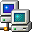
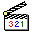

当前分类: 全部
共收录 34 个在线项目与开源仓库
来源: blog.zgqinc.gq
北极狐 | 开源安全取证、底层逆向分析、嵌入式软硬件创客 & 极客玩家
当前视图: 语言和工具
状态: 已连线 GitHub
@ZGQ-inc
状态: 已连线 Telegram & 博客 RSS
blog.zgqinc.gq
@CopyRightZGQInc
后端: Cloudflare Python Worker + D1
留言: 0 条
参数化防注入保护
来源: Spotify 音乐空间动态档案
状态: 已连线
@a54fe2pnapk5pbzbh0on5gczd
预设: 就绪
轮播倒计时: 25s
WebGL 2.0
Second Edition (Synthwave Cyber Release 2026)
注册组织: ZGQ Inc. (zgqinc@gmail.com)
桌面架构: 1:1 Windows 98 (98.css & 1j01/98 真实像素资产)
视效引擎: Butterchurn Milkdrop & Wallpaper Engine 4K 画布
音乐源: NewRetroWave (NRW) Official 600+ 在线电台
历史代码存档: 所有旧项目已安全转移至 /old/ 目录
/old/
字符数: 0
自动保存: 已就绪
19 个对象
总计 48.6 MB
双击可直接在新标签页打开历史网页或送至播放器试听